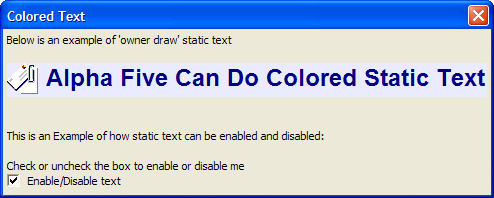

Colored Static Text
This example shows how to use the Static Text O Directive. The {F} operator specifies font, size, and style. The {B} operator specifies background color. The {C} operator specifies foreground color. The {I} operator inserts an image.
dim flag as L flag = .t. ui_dlg_box("Colored Text",<<%dlg% Below is an example of 'owner draw' static text; {lf}; {'%O={F=Arial,18,B}{B=Blue White,Yellow,Win3D}{C=Dark Blue}{I:'a5_attachments32'} Alpha Anywhere Can Do Colored Static Text%?flag}; {lf}; {lf}; This is an Example of how static text can be enabled and disabled:; {lf}; {'Check or clear the box to enable or disable me?flag}; (flag) Enable/Disable text; %dlg%) |
Note how the (flag) check box sets the flag variable, which enables or disables the static text.

Next
Controlling Insertion Point and Selected Text in a Text Object
See Also
Limitations
Desktop applications only.